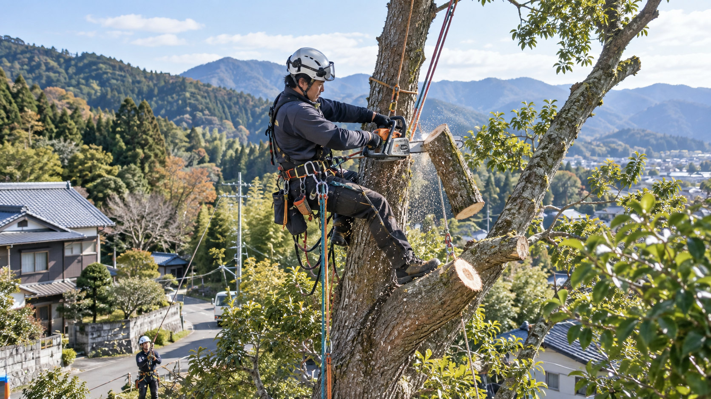
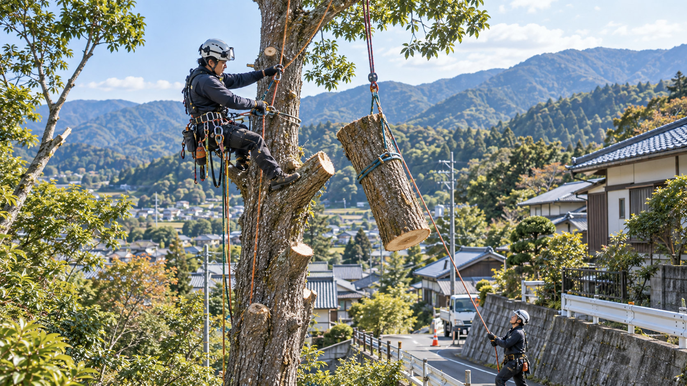

04 SPECIAL TREE CUTTING
OUR BUSINESS / SERVICE 04
特殊伐採
難しい現場も、
安全に切り拓く。
家屋の近く、道路沿い、傾斜地、狭小地、高所など、通常の伐採が難しい現場でも、状況に応じた方法で安全に伐採・処理します。
ABOUT SERVICE
特殊伐採について
特殊伐採とは、木を根元から一方向へ倒す通常の伐採や、重機による伐採が難しい場所で、枝や幹を小さく切り分けながら安全に降ろす作業です。
住宅地や狭小地、急斜面、電線付近、建物・道路周辺、高木など、倒す方向や作業スペースが限られる現場に対応します。木の状態と周囲の環境を確認し、落下物や接触のリスクを抑えた施工方法を選びます。
必要に応じてロープ作業、分割伐採、高所作業車やクレーンを活用します。伐採後の木材の搬出・処分・一次破砕・木質チップ化まで、まとめてご相談いただけます。
- 現地調査
- 高所・狭小地対応
- ロープ作業
- 分割伐採
- 家屋・道路際の伐採
難しい立地や高所の木も、現地状況に合わせて安全第一で対応します。

WHY CLEARTH
Clearthの特殊伐採
難しい条件の現場でも、安全性と周辺環境への配慮を優先し、伐採後の木材活用まで一貫して対応します。
- 01
現地状況に応じた安全な方法を選定
林業現場や重機作業で培った経験を活かし、樹木の状態や立地に応じてロープ作業・高所作業車・クレーンなどを使い分けます。
- 02
家屋・道路・周辺設備に配慮した施工
建物、電線、道路、隣接地への影響を確認し、落下物や車両動線、近隣への影響に配慮して計画します。
- 03
高所・難所にも対応できる柔軟な作業力
狭小地や急斜面など、木をそのまま倒せない現場では、枝や幹を分割して安全な位置へ降ろす方法を検討します。
- 04
伐採後の搬出・処理・資源活用まで一貫対応
枝や幹の搬出・適正処理から、活用できる木材の一次破砕・木質チップ化までまとめてご相談いただけます。
FLOW
ご相談から完了まで
現地調査とお見積もりの後、安全な作業方法を確認して施工します。
- 01お問い合わせ
- 02現地確認
- 03作業方法・お見積り
- 04特殊伐採作業
- 05搬出・処理／完了
FOR YOU / WHO IT HELPS
こんなお悩みはありませんか？
住宅地、道路沿い、傾斜地など、通常の伐採が難しい場所のご相談を承ります。
- 家の近くに大きな木があり、通常の伐採が難しい
- 道路沿いの木を安全に処理したい
- 傾斜地や狭い場所で伐採方法に困っている
- 高所の枝や木を安全に撤去したい
- 伐採後の処分や搬出までまとめて依頼したい
FAQ
よくあるご質問
現地調査、施工方法、近隣対応、伐採後の木材、対応エリアについて、よくいただくご質問をまとめました。
どんな場所でも対応できますか？
住宅地、狭小地、急斜面、電線や道路付近など、通常の伐採が難しい場所でも、ロープ伐採、高所作業車、クレーンを組み合わせて対応方法を検討します。現場条件によっては対応が難しい場合もありますが、まずは現地を確認し、安全に施工できる方法をご提案します。
現地調査は無料ですか？
はい。広島県内を中心に、現地調査とお見積もりは無料です。遠方や特殊な条件がある場合は、訪問前に確認事項をご案内します。
近隣への配慮はしてもらえますか？
はい。作業時間、車両の配置、落下物や騒音の影響を確認し、住宅、道路、隣接地へ配慮して施工します。必要に応じて事前のご案内方法もご相談します。
伐採後の処分もお願いできますか？
はい。枝や幹の搬出、適正処理まで対応します。搬出した木材のうち再利用できるものは、木質チップへ加工し、資源循環につなげます。
対応エリアはどこですか？
廿日市市を拠点に、広島県全域を中心として対応しています。近隣県についても対応可能な場合がありますので、まずは現場の所在地をお知らせください。
CONTACT
特殊伐採について、まずは現場の状況をお聞かせください。
住宅や建物に近い高木、急斜面の危険木、電線・道路付近の木など、通常の伐採が難しい現場もご相談ください。ロープ伐採、高所作業車、クレーンの中から、現場に適した方法をご提案します。
木全体・根元、建物や道路との距離、車両が入れる道などが分かる写真をメールでお送りいただくと、事前確認がスムーズです。電線や公共施設に近い木は、必要に応じて関係機関と確認しながら対応方法を検討します。
対応エリア
廿日市市を拠点に、広島県全域を中心として対応しています。近隣県についても対応可能な場合がありますので、お気軽にご相談ください。
現地調査・お見積もりは無料です。伐採から搬出、適正処理、木質チップ化による資源化まで一貫してご相談いただけます。